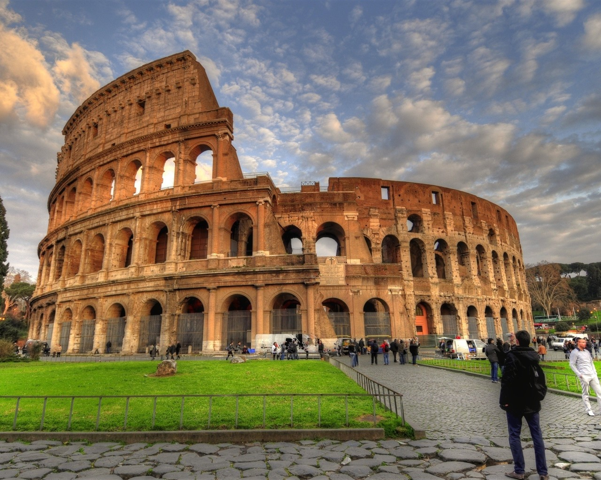

Coliseu
O Coliseu é um anfiteatro gladiatorial localizado em Roma, Itália. É uma das mais importantes obras do período imperial romano. O coliseu foi construído entre 70 e 80 d.C. e era usado para uma variedade de eventos, incluindo lutas de gladiadores, batalhas navais simuladas e outros espetáculos públicos. O Coliseu é um símbolo icônico da Roma antiga e é uma das principais atrações turísticas da cidade.